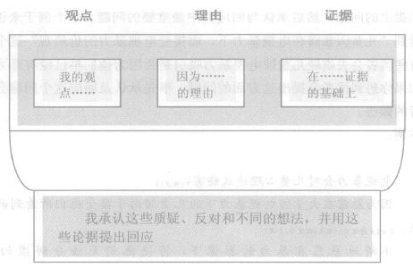
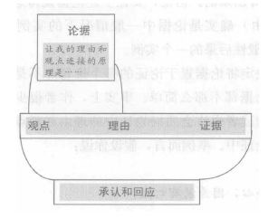

概论
本章将讨论研究论证的五个要素，并说明这些要素怎样对读者可能问的问题作出回应，以及如何将这些要素组织成严谨一致的论证。
当你对所做的研究有足够的认识并开始规划撰写报告时，你应该对研究问题有个虽为尝试性但却清楚的理解，并且知道为什么该问题与读者息息相关，同时也有个尝试性的但却还算具体的答案。你必须列出理由支持你的观点，以及提出证据来支持这些理由。你必须先设想读者会提出什么样的问题和什么样的反驳，仿佛他们就在你面前一样。当然你无法想象他们所有的问题，读者也不会这样期望你，但是至少能预想五个论证构成要素的问题，并先想好如何回答。
在研究报告中，提出一个观点，用理由支持这观点，而这个理由是基于证据、承认与对其他观点的回应，有时还要解释你推理的原理（principle）。这里面并没有什么奥秘，因为每当你想要仔细探索悬而未决的议题时，你都会应用这些要素：
假如你想象自己同时扮演A和B的角色，你将会发现撰写研究报告这件事对你来说并不陌生，因为每一项被写出来的论证——不管是不是与研究有关——都是基于你要为读者回答的五种问题：
观点是研究报告的核心，也是研究问题的答案，支持观点有两种类型。第一种类型是至少有一项理由支持，用一、两句话解释为什么你的读者应该接受你的观点。我们通常会用因为来连接观点与理由：
俄罗斯农民的解放是一张空头支票，（现点）
因为这并未改善他们日常的物质生活。（理由）
电视暴力会对儿童心理造成伤害，（观点）
因为暴露在大量的电视暴力下的儿童倾向于接受他们所看到的价值观。（理由）
讲到这里，我们稍停下来以澄清一些用词。我们必须将一般的观点（claim in general）及主要观点区分一下，并将这些观点与理由区分：
上述这些用词可能会使你感到混淆，因为通常一个理由要被更多的理由支持，如此一来前面这个理由又变成了观点。事实上，一个句子可能同时是理由又是观点，当它陈述的是（1）支持一个观点，而且（2）反过来被另一个理由支持时：譬如：
电视暴力会对儿童心理造成伤害，（现点1）
因为暴露在大量的电视暴力下的儿童倾向于接受他们所看到的价值。（理由1支持观点1/观点2为理由2所支持）
他们不停地暴露在暴力的影像下，这将使他们无法分辨虚幻与真实。（理由2支持理由1/观点2）
理由可以是以理由为基础的，但最后都必须落实在证据的基础上。
在平常的交谈中，我们常用理由去支持观点：
我们应该走了，（观点）
因为似乎要下雨了。（理由）
而我们不会去问要下雨的证据是什么（除非是气象学家，他会说：那不是快要下雨的乌云，那只是……）
但是当你以文字提出严肃的议题时，你不可能期待读者会轻易接受你所有的理由。细心的读者会像那个气象学家一样，要求研究者提出那些支持你的理由的证据、资料或事实。
举例：
电视暴力会对儿童心理造成伤害，（观点1）
因为暴露在大量的电视暴力下的儿童倾向于接受他们所看到的价值对。（理由1支持观点1/观点2被理由2支持）
他们不停地暴露在暴力影像下，将使他们无法分辨虚幻与真实。（理由2支持理由1/观点2）
Smith(1997)发现一天看超过3小时的电视暴力节目的5—9岁的儿童，比其他儿童有高出25%的几率认为他们所看到的电视节目是“真实发生的事情”。（证据支持理由2）
原则上来说，证据是你和读者所能看到的、触摸到的、尝到的、闻到的，以及听到的东西（可能是一件再平凡不过的事实：昨天早上太阳从东边升起）。我们不会问：我从哪儿可以看到你的理由？ 这是毫无意义的问话。但是如果改问：我从哪儿可以看到证据？ 这就有意义。
我们无法看到儿童所摘取的价值观，但是我们可以看着儿童回答这个问题：你认为在电视中看到的是真实的吗？这个例子可能在某种程度上过度简化了“证据就在那里”的概念，但是它说明白主要原则。（我们将在第九章对理由及证据之间的差异有更多详细的讨论）
我们现在掌握到研究论证的核心架构是：
支持观点的理由建立于证据的基础之上
一个负责任的研究者以有证据基础的理由来支持观点。但是那些细心的读者不会光凭你提出的理由及证据就接受你的观点，除非他们想的跟你完全一样（但这是不太可能的，因为你正提出一个自己的论证呢！）。他们很可能会想到一些你没有的证据，对你的证据有不同的解读，或是从相同的证据中引出不同的结论。他们可能会拒绝接受你的理由为真；或即使他们接受你的理由，但是他们否认这些理由与你的观点的关联性，因而无法支持你的观点。他们可能想到你从未考虑到的观点。
换句话说，读者可能对论证的任何部分提出质疑，所以你必须尽可能预估他们提出的问题，然后承认与回应其中最重要的问题。举个例子来说，当读者看到“儿童因暴露在电视暴力下，而接受电视暴力的价值观”这个观点时，有些读者会去质疑儿童被电视暴力吸引是否因为他们早已经有暴力倾向了。如果你想到读者会提出这方面的问题，事先承认及回应这个问题会是一个明智的做法。
举例：
电视暴力会对儿童心理造成伤害，（观点1）
因为暴露在大量的电视暴力下的儿童倾向于接受他们所看到的价值观。（理由1支持观点1/观点2被理由2支持）
不断地暴露在暴力的影像下，将使他们无法分辨虚幻与真实。（理由2支持理由1/观点2）
Smith(1997)发现一天观看超过3小时的电视暴力节目的5-9岁的儿童，比起其他小孩有高出25%的几率认为他们所看到的电视节目是“真实发生的事情”。（证据支持理由2）
当然，倾向于观看大量的暴力性的节目的儿童可能已具暴力的价值观。（承认）
但是Jones(1989)发现不论儿童有无暴力倾向，他们都易被具有暴力性的电视节目吸引。（回应）
所有的研究者面临到的问题并非只在于回应读者的问题、异议及反驳，还要设法去想象这些问题、异议及反驳。（在第十章我们将检验你应该预期到的问题及反驳）。
既然没有一位研究者可以缺乏上述情况而完成论证，因此我们在图示中加入承认及回应，显示承认与回应二者与论证的所有其他部分是相关的。

即使读者同意有充分的证据支持你所提出的理由，他们可能仍不认为这样就该接受你的观点。他们会问：虽然你的理由是真实的，但为什么与你的观点有关？
举个例子，假设你提出下面这个观点以及支持它的理由（假设证据存在）：
曾经观看大量电视暴力节目的小孩长大成人后，倾向于认为暴力在日常生活中是合理的，（观点） 因为当他们是儿童时，就倾向于接受他们所看到的暴力的价值观。（理由）
读者质疑的可能不是理由的真实性，而是理由与观点之间的关联性（relevance）：
为什么儿童时接受暴力的价值观，在成人时就必然会接受暴力在日常生活中是合理的？我看不出观点与理由之间的相关性。
为了回答这个问题，你必须提出一般性的原则，以显示为什么你相信这个特定理由与这个特定观点有关联：
如果儿童接受特定的价值观，当他们长大成人后，会把反映出他们价值观的行为视为正常。
上面的陈述——有时候又称做论据（warrant）——表达的是推理的普遍原理，这个原理适用的不仅是电视暴力，也适用于所有儿童时期建立的价值观与日后成年人的行为。
把论据视为一种原理，而这个原理观点我们在某种一般情况下可以断然推论出一般性后果。然后，你就可以利用这个论据来合理地说明：这个一般性后果的一个特定实例（你的观点）是从前述一般情况下的一个特定实例（即，你的理由）推导出来的。但是，要让上述论据说得通，读者首先必须同意特定情况（或理由）确实是论据中一般情况下的实例，也同意特定后果（或观点）确实是一般性后果的一个实例。
你会发现，要决定将论据置于论证的哪个位置并不是件容易的事，甚至连决定是否要置放论据都不那么简单。事实上，作者很少会在论证中置入论据，只有当他们认为读者也许会质疑论证中的理由和观点的关联性时，才会把论据加进他们的论证中。举例而言，假设你说：
下楼时要小心，因为没有灯光。
你不用加上什么论据。
在黑暗中，必须小心不要踩空。（论据）
所以，下楼梯时要注意，（观点）
因为没有灯光。（理由）
第一行看来似乎有些画蛇添足。
但如果你认为读者无法马上理解你的理由与观点间有关联性的话，那么你就必须用论据来将它们联系起来：
电视与电脑游戏中的暴力内容会对心理造成伤害。（主要观点）
我们很少会去质疑，当儿童被重复暴露在一些以写实又具吸引力的方式所表现出来的价值观时，他们会用这些价值观去建构他们对这个世界的理解。（论据）
同样的，不停地暴露在暴力性的节目下的儿童，会倾向于接受他们所看到的价值观……
从这个例子你可以看出来，论证不像论据般那么抽象难懂。
我们把论据加在图之中，可看出他们如何连接观点与理由：

这五项要素构成“基本的”的论证。但许多人也会加入另一个要素——即，对读者可能不了解议题的解说（explanations）。例如，你要提出一个关于通货膨胀与货币供给之间关联性的论证给不熟知经济学的读者时，你必须解释经济学家如何以不同的方式去定义“货币”。
研究报告中的论证，当然比上面我们举出的例子复杂得多。首先，研究者的观点几乎不限于只用一种理由去支持，而每个理由又有自己的证据支持，有自己的论据保证。其次，可预期的是，读者对你的论证会有很多不同的看法，谨慎的研究者应针对这些不同的意见作出回应。
但是最重要的是，具有重要实质内容的论证（substantial argument）,其每个元素本身可能就是观点，且受它自己的论证所支持。每一个理由常被视为观点，并被其他的理由所支持，有时这些“其他的理由”本身又是观点。论据可能有自己的论证支持，而这个论证就有它自己的理由及证据，甚至可能有它自己的论据、承认及回应。每一个回应可能本身就是一个小小的——有时是完整的——论证。只有证据是可以独立出来的，但你可能必须向读者解释证据从何处得来，以及为什么你认为证据可靠。
以论证来“充实”论证的过程是作者获得读者信赖的一种方式。读者会根据研究者如何将论证要素处理妥当，以及如何注意到读者所关切的问题，来评判研究者。在这个过程中，读者会判断你的学术水平，甚至你的人格特质——你在论证中所反映出来的形象，传统上我们称之为学术风范（ethos）。如果你是彻底支持你的观点而且认真考虑其他观点的人，读者就有理由相信你所说的，而不会质疑你所疏漏的。借由承认读者的不同观点，你同时也增进了读者想要与你共同发展及检验一些新想法的愿望。
最终，你个人的研究论证反映出的学术风范，会形成你的学术声望，而学术声望是每一位研究者都应该深切关心的，因为它将会是以后你写任何论证时无形的“第六要素”。它回答了人们心中的一个问题：我能信任这个人吗？ 假如你的读者不认识你，你必须在每一个论证中去赢得他们对你的信任。但如果他们真的认识你，你希望他们心中问题的答案是：我可以信任这个人！
在接下来的四个章节中，我们会详细地讨论论证的每个要素，告诉你如何将这些要素汇集成一个完整的论证，以及如何批判性地思考它们。在本书的第四部分中，我们将讨论如何安排这些元素并写出条理分明的报告。
论证失败有许多原因，缺乏经验的研究者常因太依赖自己熟悉的领域，而忽略了读者的需要，因而造成错误。这里有两个常见的问题是需要避免的。
如果你正进入一个新的领域，而且不熟悉其论证的特殊形式，你就会很容易回到旧有的论证模式。每次进入新的研究团体时，必须设法找到这个新团体会期待你使用的论证类型。在选修第一年的写作课时，要学习从个人的经验找证据或在社会议题上采取的立场，不要认为你可以将同样的模式运用到强调“客观数据”（如实验心理学）的领域中。反过来说，假如你主修心理学或生物学，要学习收集数据并以统计方法分析，而且避免将其总结为个人的感觉，那么，同样的道理，你也不能想当然地在艺术史领域里用同样的方法。
这并不是说你在某课程中所学到的东西在另一课程中就无法施展。所有的领域都能共享我们所描述的论证要素。但是你必须注意区别在不同领域中如何掌握这些要素，并且保持足够的弹性去适应不同的领域，同时信任你已熟悉的技巧。当你阅读文献而注意到这些原始资料所用的不同形式的证据时，你大概就可以预期到这个问题。注意下列不同领域所使用的不同的证据形式：
同样重要的，注意从未在你领域中使用过的证据类型。比方说逸事增添了文学史的趣味性，但对社会学的解释而言却不见得是好的证据；细腻描绘的叙事法在许多人类学报告中是极其重要的，但对粒子物理学的论证来说却是毫不相关的。
当你刚接触新的领域时，读到的每件事情似乎都令你困惑。就如同处在这种环境下的每一个人一样，你会想找出熟悉的方法或是明确的解答——任何能帮助你简化问题复杂性的答案。一旦找到那个解答时，你也可能陷人一种过度简化你的论证的危险。但是复杂的问题不会仅是单一又明确的原因；一个严肃的问题不会只有单一而无条件限定的答案；一个有趣的问题不会只靠单一的方法解决。因此当你是某领域里的新手时，应该去寻找限定条件，至少为你的问题想出一种替代性的方案；询问其他同领域的人是否有处理该问题的不同方法。
当你学到这个领域的典型问题、它的解决方法、各种学说等之后，你就会开始对标准的论证形式感到自在。就是在这个时候，那些稍稍积累了一些研究经验的研究者容易屈服于另一种过度概括（overgeneralization）：一旦你学会了如何建构一种论证，你就会试着一遍又一遍地提出相同的论证。要小心的是每一个领域都存在着第二种复杂性：相互竞争的解决方案、相互竞争的方法学、相互竞争的目标等的复杂性——这些都代表着一个生机勃勃的研究领域。你学到的越多，你的认知也会越多：事情并不是像你第一次所想的那般复杂，但也不是像你当时所期望的那般简单。
认知上的超载：几句安心话
到目前为止你也许会感到负担过重。不用担心！你的焦虑跟年龄或智力并没有什么关系，而是因为你在特定的领域中全然缺乏经验所致。我们三位作者中的一位曾向教授法律写作的老师们解释一位法律系的新生为何会局促不安。之后，一位老师说她曾是人类学教授，她过去所写的论文因明晰有力而受到赞扬，之后她又转向法学院。在法学院的前半年，她老觉得自己写的东西很不流畅，甚至怀疑自己受到退化性脑病变的影响。当然，她并没有得退化性脑病变的疾病。她只是经历了一种类似于暂时性失语症的经验，这是我们多数人尝试撰写我们并不完全熟悉的东西时产生的一种经验，更何况我们还要时刻考虑到读者的接受能力。当她发现了解法律知识越多，她的写作就越流畅时，她也就放心了。